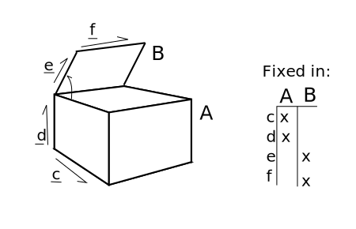

Vector & ReferenceFrame¶
In sympy.physics.vector, vectors and reference frames are the “building blocks” of
dynamic systems. This document will describe these mathematically and describe
how to use them with this module’s code.
Vector¶
A vector is a geometric object that has a magnitude (or length) and a direction. Vectors in 3-space are often represented on paper as:
{kind=link}
Vector Algebra¶
Vector algebra is the first topic to be discussed.
Two vectors are said to be equal if and only if (iff) they have the same magnitude and orientation.
Vector Operations¶
Multiple algebraic operations can be done with vectors: addition between vectors, scalar multiplication, and vector multiplication.
Vector addition as based on the parallelogram law.
{kind=link}
Vector addition is also commutative:
Scalar multiplication is the product of a vector and a scalar; the result is a vector with the same orientation but whose magnitude is scaled by the scalar. Note that multiplication by -1 is equivalent to rotating the vector by 180 degrees about an arbitrary axis in the plane perpendicular to the vector.
{kind=link}
A unit vector is simply a vector whose magnitude is equal to 1. Given any vector \(\mathbf{v}\) we can define a unit vector as:
Note that every vector can be written as the product of a scalar and unit vector.
Three vector products are implemented in sympy.physics.vector: the dot product, the
cross product, and the outer product.
The dot product operation maps two vectors to a scalar. It is defined as:
where \(\theta\) is the angle between \(\mathbf{a}\) and \(\mathbf{b}\).
The dot product of two unit vectors represent the magnitude of the common direction; for other vectors, it is the product of the magnitude of the common direction and the two vectors’ magnitudes. The dot product of two perpendicular is zero. The figure below shows some examples:
{kind=link}
The dot product is commutative:
The cross product vector multiplication operation of two vectors returns a vector:
The vector \(\mathbf{c}\) has the following properties: it’s orientation is perpendicular to both \(\mathbf{a}\) and \(\mathbf{b}\), it’s magnitude is defined as \(\Vert \mathbf{c} \Vert = \Vert \mathbf{a} \Vert \Vert \mathbf{b} \Vert \sin(\theta)\) (where \(\theta\) is the angle between \(\mathbf{a}\) and \(\mathbf{b}\)), and has a sense defined by using the right hand rule between \(\Vert \mathbf{a} \Vert \Vert \mathbf{b} \Vert\). The figure below shows this:
{kind=link}
The cross product has the following properties:
It is not commutative:
and not associative:
Two parallel vectors will have a zero cross product.
The outer product between two vectors will not be not be discussed here, but instead in the inertia section (that is where it is used). Other useful vector properties and relationships are:
Alternative Representation¶
If we have three non-coplanar unit vectors \(\mathbf{\hat{n}_x},\mathbf{\hat{n}_y},\mathbf{\hat{n}_z}\), we can represent any vector \(\mathbf{a}\) as \(\mathbf{a} = a_x \mathbf{\hat{n}_x} + a_y \mathbf{\hat{n}_y} + a_z \mathbf{\hat{n}_z}\). In this situation \(\mathbf{\hat{n}_x},\mathbf{\hat{n}_y},\mathbf{\hat{n}_z}\) are referred to as a basis. \(a_x, a_y, a_z\) are called the measure numbers. Usually the unit vectors are mutually perpendicular, in which case we can refer to them as an orthonormal basis, and they are usually right-handed.
To test equality between two vectors, now we can do the following. With vectors:
We can claim equality if: \(a_x = b_x, a_y = b_y, a_z = b_z\).
Vector addition is then represented, for the same two vectors, as:
Multiplication operations are now defined as:
To write a vector in a given basis, we can do the follow:
Examples¶
Some numeric examples of these operations follow:
Vector Calculus¶
To deal with the calculus of vectors with moving object, we have to introduce the concept of a reference frame. A classic example is a train moving along its tracks, with you and a friend inside. If both you and your friend are sitting, the relative velocity between the two of you is zero. From an observer outside the train, you will both have velocity though.
We will now apply more rigor to this definition. A reference frame is a virtual “platform” which we choose to observe vector quantities from. If we have a reference frame \(\mathbf{N}\), vector \(\mathbf{a}\) is said to be fixed in the frame \(\mathbf{N}\) if none of its properties ever change when observed from \(\mathbf{N}\). We will typically assign a fixed orthonormal basis vector set with each reference frame; \(\mathbf{N}\) will have \(\mathbf{\hat{n}_x}, \mathbf{\hat{n}_y},\mathbf{\hat{n}_z}\) as its basis vectors.
Derivatives of Vectors¶
A vector which is not fixed in a reference frame therefore has changing properties when observed from that frame. Calculus is the study of change, and in order to deal with the peculiarities of vectors fixed and not fixed in different reference frames, we need to be more explicit in our definitions.
{kind=link}
In the above figure, we have vectors \(\mathbf{c,d,e,f}\). If one were to take the derivative of \(\mathbf{e}\) with respect to \(\theta\):
it is not clear what the derivative is. If you are observing from frame \(\mathbf{A}\), it is clearly non-zero. If you are observing from frame \(\mathbf{B}\), the derivative is zero. We will therefore introduce the frame as part of the derivative notation:
Here are some additional properties of derivatives of vectors in specific frames:
Relating Sets of Basis Vectors¶
We need to now define the relationship between two different reference frames; or how to relate the basis vectors of one frame to another. We can do this using a direction cosine matrix (DCM). The direction cosine matrix relates the basis vectors of one frame to another, in the following fashion:
When two frames (say, \(\mathbf{A}\) & \(\mathbf{B}\)) are initially aligned, then one frame has all of its basis vectors rotated around an axis which is aligned with a basis vector, we say the frames are related by a simple rotation. The figure below shows this:

The above rotation is a simple rotation about the Z axis by an angle \(\theta\). Note that after the rotation, the basis vectors \(\mathbf{\hat{a}_z}\) and \(\mathbf{\hat{b}_z}\) are still aligned.
This rotation can be characterized by the following direction cosine matrix:
Simple rotations about the X and Y axes are defined by:
Rotation in the positive direction here will be defined by using the right-hand rule.
The direction cosine matrix is also involved with the definition of the dot product between sets of basis vectors. If we have two reference frames with associated basis vectors, their direction cosine matrix can be defined as:
Additionally, the direction cosine matrix is orthogonal, in that:
If we have reference frames \(\mathbf{A}\) and \(\mathbf{B}\), which in this example have undergone a simple z-axis rotation by an amount \(\theta\), we will have two sets of basis vectors. We can then define two vectors: \(\mathbf{a} = \mathbf{\hat{a}_x} + \mathbf{\hat{a}_y} + \mathbf{\hat{a}_z}\) and \(\mathbf{b} = \mathbf{\hat{b}_x} + \mathbf{\hat{b}_y} + \mathbf{\hat{b}_z}\). If we wish to express \(\mathbf{b}\) in the \(\mathbf{A}\) frame, we do the following:
And if we wish to express \(\mathbf{a}\) in the \(\mathbf{B}\), we do:
Derivatives with Multiple Frames¶
If we have reference frames \(\mathbf{A}\) and \(\mathbf{B}\) we will have two sets of basis vectors. We can then define two vectors: \(\mathbf{a} = a_x\mathbf{\hat{a}_x} + a_y\mathbf{\hat{a}_y} + a_z\mathbf{\hat{a}_z}\) and \(\mathbf{b} = b_x\mathbf{\hat{b}_x} + b_y\mathbf{\hat{b}_y} + b_z\mathbf{\hat{b}_z}\). If we want to take the derivative of \(\mathbf{b}\) in the reference frame \(\mathbf{A}\), we must first express it in \(\mathbf{A}\), and the take the derivatives of the measure numbers:
Examples¶
An example of vector calculus:
{kind=link}
In this example we have two bodies, each with an attached reference frame. We will say that \(\theta\) and \(x\) are functions of time. We wish to know the time derivative of vector \(\mathbf{c}\) in both the \(\mathbf{A}\) and \(\mathbf{B}\) frames.
First, we need to define \(\mathbf{c}\); \(\mathbf{c}=x\mathbf{\hat{b}_x}+l\mathbf{\hat{b}_y}\). This provides a definition in the \(\mathbf{B}\) frame. We can now do the following:
To take the derivative in the \(\mathbf{A}\) frame, we have to first relate the two frames:
Now we can do the following:
Note that this is the time derivative of \(\mathbf{c}\) in \(\mathbf{A}\), and is expressed in the \(\mathbf{A}\) frame. We can express it in the \(\mathbf{B}\) frame however, and the expression will still be valid:
Note the difference in expression complexity between the two forms. They are equivalent, but one is much simpler. This is an extremely important concept, as defining vectors in the more complex forms can vastly slow down formulation of the equations of motion and increase their length, sometimes to a point where they cannot be shown on screen.
Using Vectors and Reference Frames¶
We have waited until after all of the relevant mathematical relationships have
been defined for vectors and reference frames to introduce code. This is due to
how vectors are formed. When starting any problem in sympy.physics.vector, one of
the first steps is defining a reference frame (remember to import
sympy.physics.vector first):
>>> from sympy.physics.vector import *
>>> N = ReferenceFrame('N')
Now we have created a reference frame, \(\mathbf{N}\). To have access to any basis vectors, first a reference frame needs to be created. Now that we have made and object representing \(\mathbf{N}\), we can access its basis vectors:
>>> N.x
N.x
>>> N.y
N.y
>>> N.z
N.z
Vector Algebra, in physics.vector¶
We can now do basic algebraic operations on these vectors.:
>>> N.x == N.x
True
>>> N.x == N.y
False
>>> N.x + N.y
N.x + N.y
>>> 2 * N.x + N.y
2*N.x + N.y
Remember, don’t add a scalar quantity to a vector (N.x + 5); this will
raise an error. At this point, we’ll use SymPy’s Symbol in our vectors.
Remember to refer to SymPy’s Gotchas and Pitfalls when dealing with symbols.:
>>> from sympy import Symbol, symbols
>>> x = Symbol('x')
>>> x * N.x
x*N.x
>>> x*(N.x + N.y)
x*N.x + x*N.y
In sympy.physics.vector multiple interfaces to vector multiplication have been
implemented, at the operator level, method level, and function level. The
vector dot product can work as follows:
>>> N.x & N.x
1
>>> N.x & N.y
0
>>> N.x.dot(N.x)
1
>>> N.x.dot(N.y)
0
>>> dot(N.x, N.x)
1
>>> dot(N.x, N.y)
0
The “official” interface is the function interface; this is what will be used
in all examples. This is to avoid confusion with the attribute and methods
being next to each other, and in the case of the operator operation priority.
The operators used in sympy.physics.vector for vector multiplication do not posses
the correct order of operations; this can lead to errors. Care with parentheses
is needed when using operators to represent vector multiplication.
The cross product is the other vector multiplication which will be discussed here. It offers similar interfaces to the dot product, and comes with the same warnings.
>>> N.x ^ N.x
0
>>> N.x ^ N.y
N.z
>>> N.x.cross(N.x)
0
>>> N.x.cross(N.z)
- N.y
>>> cross(N.x, N.y)
N.z
>>> N.x ^ (N.y + N.z)
- N.y + N.z
Two additional operations can be done with vectors: normalizing the vector to length 1, and getting its magnitude. These are done as follows:
>>> (N.x + N.y).normalize()
sqrt(2)/2*N.x + sqrt(2)/2*N.y
>>> (N.x + N.y).magnitude()
sqrt(2)
Vectors are often expressed in a matrix form, especially for numerical purposes. Since the matrix form does not contain any information about the reference frame the vector is defined in, you must provide a reference frame to extract the measure numbers from the vector. There is a convenience function to do this:
>>> (x * N.x + 2 * x * N.y + 3 * x * N.z).to_matrix(N)
Matrix([
[ x],
[2*x],
[3*x]])
Vector Calculus, in physics.vector¶
We have already introduced our first reference frame. We can take the derivative in that frame right now, if we desire:
>>> (x * N.x + N.y).diff(x, N)
N.x
SymPy has a diff function, but it does not currently work with
sympy.physics.vector Vectors, so please use Vector’s diff method. The
reason for this is that when differentiating a Vector, the frame of
reference must be specified in addition to what you are taking the derivative
with respect to; SymPy’s diff function doesn’t fit this mold.
The more interesting case arise with multiple reference frames. If we introduce a second reference frame, \(\mathbf{A}\), we now have two frames. Note that at this point we can add components of \(\mathbf{N}\) and \(\mathbf{A}\) together, but cannot perform vector multiplication, as no relationship between the two frames has been defined.
>>> A = ReferenceFrame('A')
>>> A.x + N.x
N.x + A.x
If we want to do vector multiplication, first we have to define and
orientation. The orient method of ReferenceFrame provides that
functionality.
>>> A.orient(N, 'Axis', [x, N.y])
If we desire, we can view the DCM between these two frames at any time. This
can be calculated with the dcm method. This code: N.dcm(A) gives the
dcm \(^{\mathbf{A}} \mathbf{C} ^{\mathbf{N}}\).
This orients the \(\mathbf{A}\) frame relative to the \(\mathbf{N}\) frame by a simple rotation around the Y axis, by an amount x. Other, more complicated rotation types include Body rotations, Space rotations, quaternions, and arbitrary axis rotations. Body and space rotations are equivalent to doing 3 simple rotations in a row, each about a basis vector in the new frame. An example follows:
>>> N = ReferenceFrame('N')
>>> Bp = ReferenceFrame('Bp')
>>> Bpp = ReferenceFrame('Bpp')
>>> B = ReferenceFrame('B')
>>> q1,q2,q3 = symbols('q1 q2 q3')
>>> Bpp.orient(N,'Axis', [q1, N.x])
>>> Bp.orient(Bpp,'Axis', [q2, Bpp.y])
>>> B.orient(Bp,'Axis', [q3, Bp.z])
>>> N.dcm(B)
Matrix([
[ cos(q2)*cos(q3), -sin(q3)*cos(q2), sin(q2)],
[sin(q1)*sin(q2)*cos(q3) + sin(q3)*cos(q1), -sin(q1)*sin(q2)*sin(q3) + cos(q1)*cos(q3), -sin(q1)*cos(q2)],
[sin(q1)*sin(q3) - sin(q2)*cos(q1)*cos(q3), sin(q1)*cos(q3) + sin(q2)*sin(q3)*cos(q1), cos(q1)*cos(q2)]])
>>> B.orient(N,'Body',[q1,q2,q3],'XYZ')
>>> N.dcm(B)
Matrix([
[ cos(q2)*cos(q3), -sin(q3)*cos(q2), sin(q2)],
[sin(q1)*sin(q2)*cos(q3) + sin(q3)*cos(q1), -sin(q1)*sin(q2)*sin(q3) + cos(q1)*cos(q3), -sin(q1)*cos(q2)],
[sin(q1)*sin(q3) - sin(q2)*cos(q1)*cos(q3), sin(q1)*cos(q3) + sin(q2)*sin(q3)*cos(q1), cos(q1)*cos(q2)]])
Space orientations are similar to body orientation, but applied from the frame to body. Body and space rotations can involve either two or three axes: ‘XYZ’ works, as does ‘YZX’, ‘ZXZ’, ‘YXY’, etc. What is key is that each simple rotation is about a different axis than the previous one; ‘ZZX’ does not completely orient a set of basis vectors in 3 space.
Sometimes it will be more convenient to create a new reference frame and orient
relative to an existing one in one step. The orientnew method allows for
this functionality, and essentially wraps the orient method. All of the
things you can do in orient, you can do in orientnew.
>>> C = N.orientnew('C', 'Axis', [q1, N.x])
Quaternions (or Euler Parameters) use 4 value to characterize the orientation
of the frame. This and arbitrary axis rotations are described in the orient
and orientnew method help, or in the references [Kane1983].
Finally, before starting multiframe calculus operations, we will introduce
another sympy.physics.vector tool: dynamicsymbols. dynamicsymbols is
a shortcut function to create undefined functions of time within SymPy. The
derivative of such a ‘dynamicsymbol’ is shown below.
>>> from sympy import diff
>>> q1, q2, q3 = dynamicsymbols('q1 q2 q3')
>>> diff(q1, Symbol('t'))
Derivative(q1(t), t)
The ‘dynamicsymbol’ printing is not very clear above; we will also introduce a
few other tools here. We can use vprint instead of print for
non-interactive sessions.
>>> q1
q1(t)
>>> q1d = diff(q1, Symbol('t'))
>>> vprint(q1)
q1
>>> vprint(q1d)
q1'
For interactive sessions use init_vprinting. There also exist analogs
for SymPy’s vprint, vpprint, and latex, vlatex.
>>> from sympy.physics.vector import init_vprinting
>>> init_vprinting(pretty_print=False)
>>> q1
q1
>>> q1d
q1'
A ‘dynamicsymbol’ should be used to represent any time varying quantity in
sympy.physics.vector, whether it is a coordinate, varying position, or force. The
primary use of a ‘dynamicsymbol’ is for speeds and coordinates (of which there
will be more discussion in the Kinematics Section of the documentation).
Now we will define the orientation of our new frames with a ‘dynamicsymbol’, and can take derivatives and time derivatives with ease. Some examples follow.
>>> N = ReferenceFrame('N')
>>> B = N.orientnew('B', 'Axis', [q1, N.x])
>>> (B.y*q2 + B.z).diff(q2, N)
B.y
>>> (B.y*q2 + B.z).dt(N)
(-q1' + q2')*B.y + q2*q1'*B.z
Note that the output vectors are kept in the same frames that they were provided in. This remains true for vectors with components made of basis vectors from multiple frames:
>>> (B.y*q2 + B.z + q2*N.x).diff(q2, N)
N.x + B.y
How Vectors are Coded¶
What follows is a short description of how vectors are defined by the code in
sympy.physics.vector. It is provided for those who want to learn more about how
this part of sympy.physics.vector works, and does not need to be read
to use this module; don’t read it unless you want to learn how this module was
implemented.
Every Vector’s main information is stored in the args attribute, which
stores the three measure numbers for each basis vector in a frame, for every
relevant frame. A vector does not exist in code until a ReferenceFrame
is created. At this point, the x, y, and z attributes of the
reference frame are immutable Vector’s which have measure numbers of
[1,0,0], [0,1,0], and [0,0,1] associated with that ReferenceFrame. Once
these vectors are accessible, new vectors can be created by doing algebraic
operations with the basis vectors. A vector can have components from multiple
frames though. That is why args is a list; it has as many elements in the
list as there are unique ReferenceFrames in its components, i.e. if there
are A and B frame basis vectors in our new vector, args is of
length 2; if it has A, B, and C frame basis vector, args is of
length three.
Each element in the args list is a 2-tuple; the first element is a SymPy
Matrix (this is where the measure numbers for each set of basis vectors are
stored) and the second element is a ReferenceFrame to associate those
measure numbers with.
ReferenceFrame stores a few things. First, it stores the name you supply it
on creation (name attribute). It also stores the direction cosine matrices,
defined upon creation with the orientnew method, or calling the orient
method after creation. The direction cosine matrices are represented by SymPy’s
Matrix, and are part of a dictionary where the keys are the
ReferenceFrame and the value the Matrix; these are set
bi-directionally; in that when you orient A to N you are setting A’s
orientation dictionary to include N and its Matrix, but you are also
setting N’s orientation dictionary to include A and its Matrix
(that DCM being the transpose of the other).